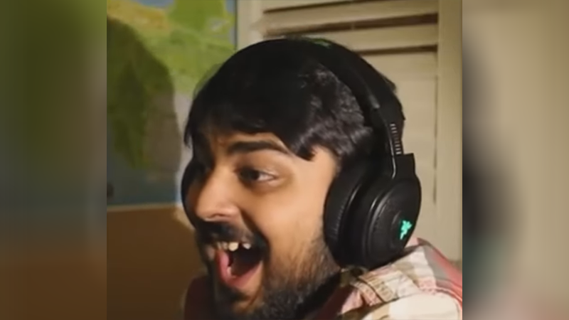
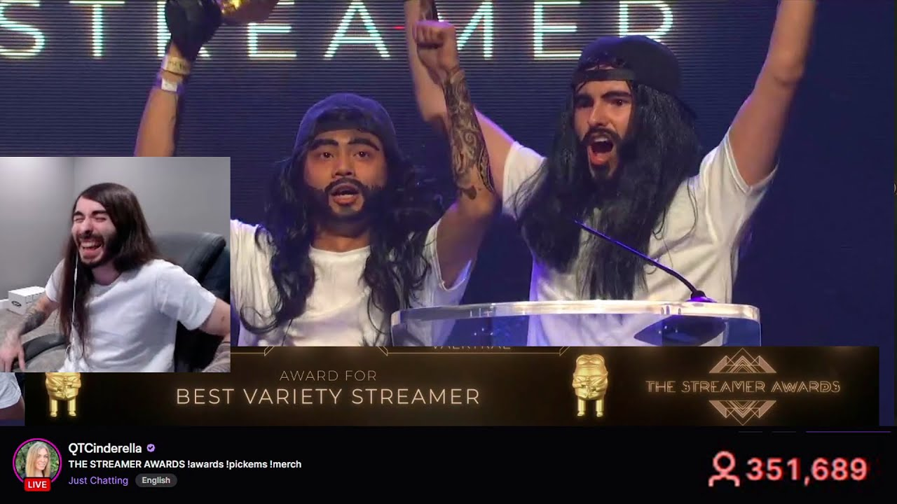
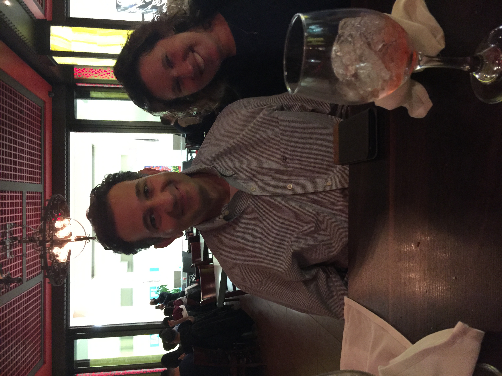
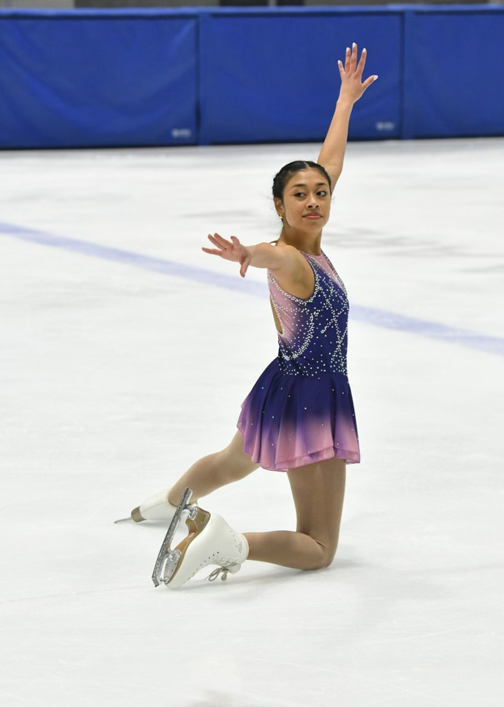
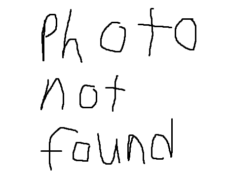

Inspirations
Every artist has things that inspire them, sometimes it's related to the medium they work in, sometimes it's something completely different Damon Albarn's inspiration for his latest album was the country of India. Shigeru Miyamoto famously said, "I made Mario after coming back from Brooklyn, New York I thought there was no media to properly represent those who had no voice, large Italian plumbers" (do NOT fact check me on that). Taylor Swift had a song In her latest album, called "Wood," which was inspired by her Fiancé (I will not be elaborating). Da Vinci had Andrea del Verrocchio and some other people whose names I can't pronounce or spell. Regardless of the truth or validity of any of the claims I have just made, there is no doubt that inspiration plays a large role in the media that is created. And, as a new aspiring artist (as can be seen by my extreme talent when it comes to web design), I, too, will join the greats. I'd say that my talent is comparable to that of Banksy, Picasso, van Gogh, Eminem, Rihanna, Elvis, Michael Jackson, Michael Jordan, Steven Spielberg, Scorsese, Tarantino, and of course, Madonna (I did come after her, so I guess that makes me a post-Madonna).
Regardless of who inspired them, I know who inspires me, but more importantly, who inspired me to get into right to repair, physical and digital media preservation, and those who just inspire me on the daily
Louis Rossmann
This former New York State resident and business owner, just wants people to be able to enjoy the things they have paid for. Rossmann owns an electronic repair store that is now located in texas, and has multiple nonprofits. the most recent of which is the FULU foundation, which sets bounties for breaking digital locks on consumer products (such as the "Nest Learning Thermostat" and the "Samsung Family Hub"), especially when the product was originally sold without said lock, but was added later in the product's life. To my knowledge, Rossmann is the content creator that is doing the most for right to repair, consumer rights, and privacy. he has lobbied congress multiple times and even getting some legislation passed in New York, along with his latest project, taking down Flock AI surveillance cameras. Said latest project is a website that stores no user information and will only allow a user to input an email and zipcode, telling them if their local government is holding meetings regarding the Flock AI cameras. This project is a huge undertaking for Rossmann, and while I will not be explaining why these AI cameras are bad (you can look up why in your own time), I am very excited to see the effect this has in stopping these dangerous and easily abused surveillance tools.
SomeOrdinaryGamers
Also known as "Mutahar" or "Muta" is a Canadian YouTuber who focuses on everything "Tech" adjacent. He has some series' where he looks at malware and looks at Deep-Web related pages. He famously runs about 12 levels of Virtual Machines at any given time (this is an overexertion) and he too is deeply engrained within online communities and has acted as a voice for angry gamers for years in regards to things like Micro-transactions, DLC, Right to repair, and the "Stop Killing Games" movement.
Charles CHristopher White Jr
Going by many digital aliases (such as "Moist", "Critcal", "MoistCr1TiKaL", or "penguinz0"), Charles is a highly regarded Actor (Staring in films like "The Hunger Games: Mockingjay - Part 1"), Voice Actor (most recently playing "Sonar" or "Victor" in the game Dispatch), Musician (with a band called "The Gentle Men"), Esports Manger (Owner of "Moist Esports" (now Shopify Rebellion)), Award Winner (just click the image it will take you to his Wiki page), and Author. Charles has been known to make "slop"/reaction content on YouTube, and with this, has made serval videos on various movements that involve the preservation of digital media (such as the "Stop Killing Games" movement) along with videos disclosing his general displeasure with how the entertainment industry has been handling games, movies, TV shows, videos, and other media.
My Parents
What more is there to say? They raised me, taught me valuable lessons, instilled a sense of morality into me, and they are the reason I am so amazing (I am completely unbiased in that claim). Without them, I wouldn't be where I am today (literally and metaphorically), nor would I know how to advocate for myself, hold a conversation with people substantially older than me, know what good music sounds like, or have ever found my love of education and technology.
My Girlfriend
Even though she knows next to nothing about the tech space, programming, or cybersecurity she still helps me in ways she doesn't even realize. The amount of times Ive been stuck while programming (like for this project), and I talk to her about it, only to think of a solution that actually works is unreal. On top of that, she is an awesome Ice Skater, and nothing is more relaxing than watching someone travel back and fourth on the ice, doing spins and jumps (and having the occasional fall). In all, she is one of my main motivators to actually "Get shit done" (as said by my mom and old therapist).
My Roommates
Just like Weird Al in his movie, I too have a support group of crazed/deranged individuals who enable me and my horrendous ideas. If you ever hear 3 people screaming profanities across campus, there is a 79% chance it is us arguing about a topic that has no cultural significance or making ironic jokes about the tech field. Without them, I don't know if I would have lost my sanity, but thanks to them, every night is a new adventure and each day is a new way to lose my mind. Despite this, My mind is never more active and challenged then when I am trying to work through something with them.
